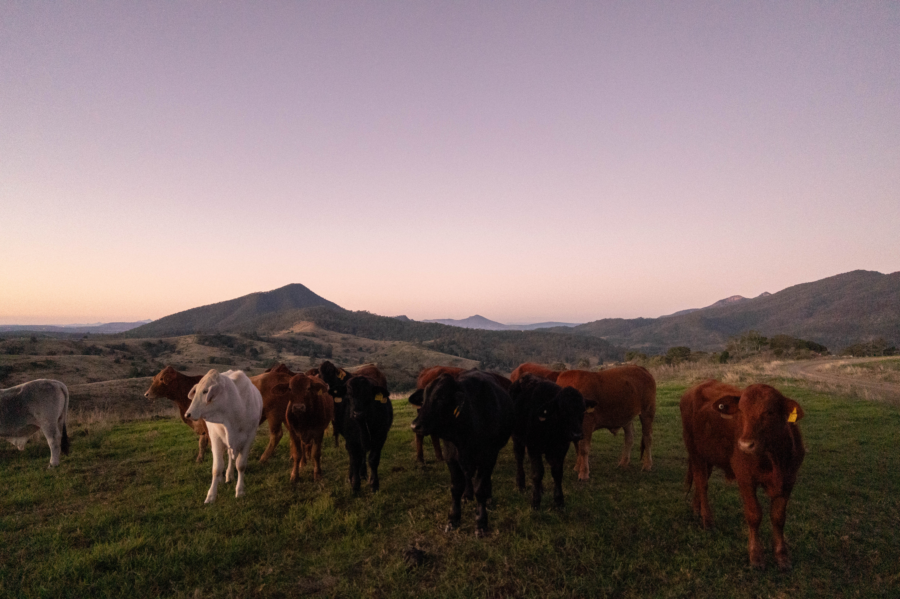
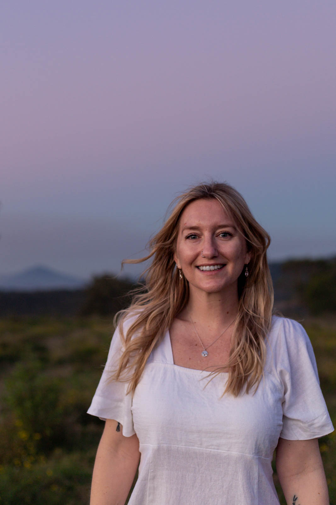
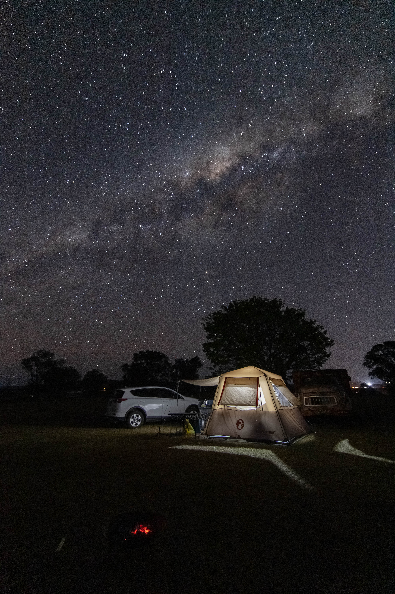
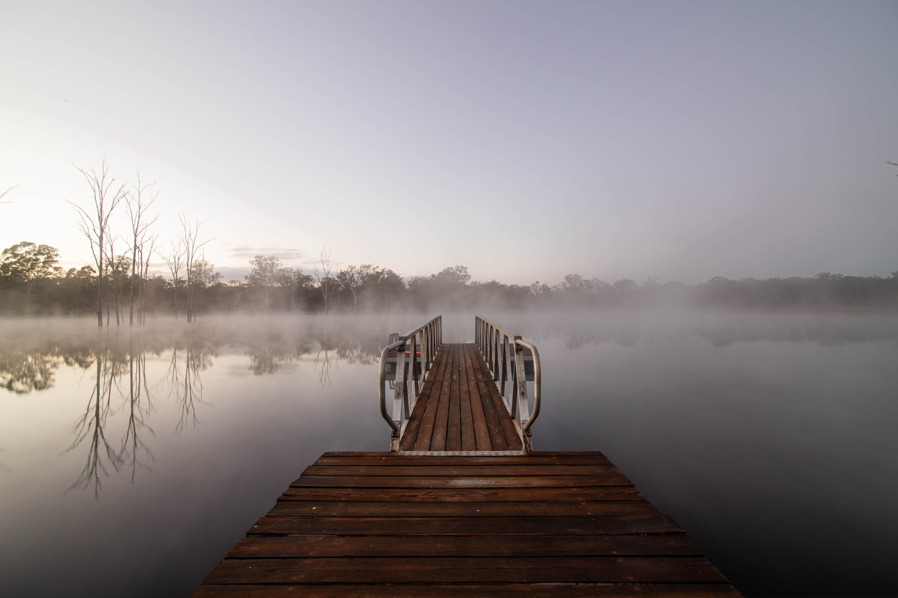

01 / After dark
Astrophotography
Nightscapes, star trails and the sky above us.

About me
You’ll usually find me on a hiking trail, flying the drone or beneath the stars. Based in Queensland, I love exploring the outdoors and sharing a little of its beauty through my lens.
Get in touch

What brings me outside
I’ve been taking photos since 2018, and my favourite captures often come with a story: an early alarm, a questionable forecast or a quick photo stop that lasted longer than expected.
I enjoy creating timelapses, watching the light shift and the night sky come to life. There’s a little patience involved, and usually plenty of photos waiting to be sorted afterwards.
Here, you’ll find some of my favourite captures, with stories from behind the scenes.
01 / After dark
Nightscapes, star trails and the sky above us.

02 / Out exploring
Open spaces and a fresh perspective on familiar places.

03 / A different pace
Light, movement and the passing of time.

Contact me
or just want to say hello? Leave me a message.
Follow along on Instagram ↗